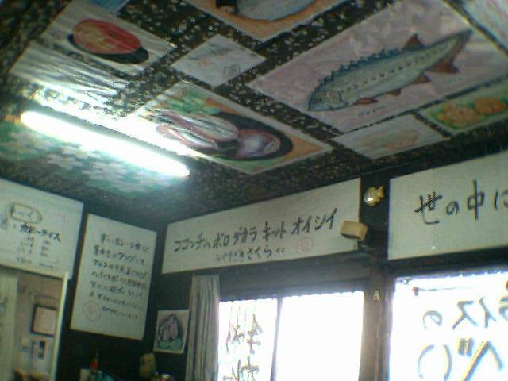

２００３年９月１６日
かねてから「木曽に怪しいカレー屋がある」との情報があったが、なかなか行く機会に恵まれなかった。 今回、上田営業所Ｋ氏の同行により、念願がかなったので報告する。
上松町、国道１９号線を名古屋に向かい、右側を注意してほしい。 クルマが何台か停車できる路肩の付近に、このような「ホッタテ小屋」が見えるだろう。 これこそ、ツーリングライダーの間ではカナリ有名らしい「木曽のカレー専門店」である。
初めての客をまるで寄せ付けないようなたたずまい。 窓という窓、すべてに張り紙がされており、店内の様子をうかがうことはできない。 軒先に吊るされる裸電球が「営業中」を示すとのことであったが、電気代節約のため、その裸電球も撤去されてしまったとのことだ。
恐る恐る店に入ると、このオバちゃんが親しげに迎え入れてくれた。 奥の厨房にはコック帽をかぶったおやじ。 サイトによってはいろいろな名前で紹介されているが、電話帳に掲載されている「かけはし食堂」というのが本名であるらしい。
メニューはこのように、模造紙に書かれた巨大なものだ。 たまたま「発掘！あるある大事典」で「大豆のカレー」を紹介した直後であったので、ここは迷わず「大豆のカレー」の「やや辛」をチョイス。 ちなみに、インドのチィバ大学薬学部、モフォンマッド・イドゥルシ医学博士によれば、「インドでは古くから習慣になっていますが、ウコンと豆を一緒に食べることで、肥満を抑制する効果が期待できます。」とのこと。 今の俺にはピッタリだ。
注文の品が供されるまでの間、店内の様子を観察してみた。 たいへん興味深い掲示物が壁と天井を埋め尽くしているので、まったく退屈することはない。

店主によれば、これらは常連客が貼っていくものらしい。 ただし、店主のセンスに合わないものはすぐはがされてしまうとのことで、 天井には選外品のはがされた跡が無数に残されている。
これは店主の筆による格言と思われる。 三重丸が店主のお気に入り度をよく示している。

さりげなく、かつての同業者を風刺している。微妙なひとことだ。
さて、肝心のお味のほうだが・・・、これまた微妙なところだ。 本場英国風カレーというものが俺にはよく判らないので、コメントは差し控えさせていただく。
※「やや辛」（￥９００）をオーダーしたのに、出されたのは「うま辛」（￥８００）であった。
ちなみに、我々はお昼のゴールデンタイム、１１：４５頃に入店し、１３：００頃まで１時間以上この店に滞在していたが、その間、客は我々だけであった。 おかげで、オバちゃんの絶え間ない世間話という最高のもてなしを、我々二人だけで受けるという幸運に恵まれた。 同行のＫ氏は、「８００円で一時間以上もママのサービスが受けられるんだから安いもんだ。」とご満悦であった。
関連サイト
発掘！あるある大事典・・・大豆のカレーに関するウンチク。
どうやらやメニューや謎の文章群は頻繁に変更されているらしい。グーグル検索の結果から。
とある女性ライダーのツーレポより。２０００年５月と１９９９年５月のようす。
とある男性ライダーのツーレポより、写真ページ。２００３年７月５日。
これは比較的新しい、２００３年１１月２日のようす。
この人も恐る恐る店に入ったクチらしい。とある男性ライダー２００３年５月１０日。
なんと！掲示物は１枚１００円らしい！という情報が。２００３年６月２９日。
※こちらのサイトはけっこうおもしろいので、トップページにリンクしてます。ツーレポから木曽路へ入ってね。
みなさん、やはり目的地はココのカレー屋みたいですな。
|
|
{kind=link}
{kind=link}
{kind=link}
{kind=link}
{kind=link}
{kind=link}
{kind=link}